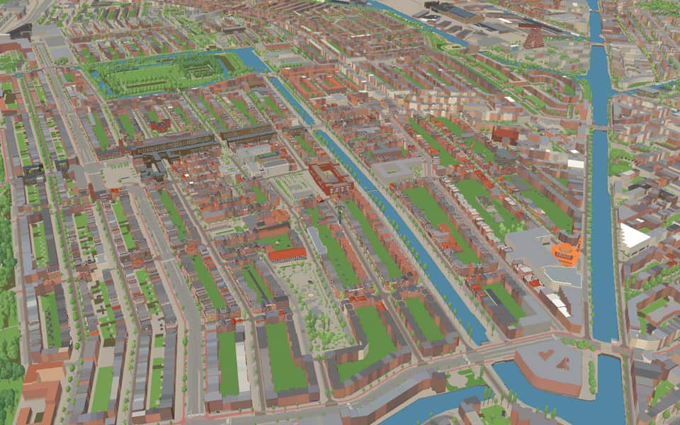
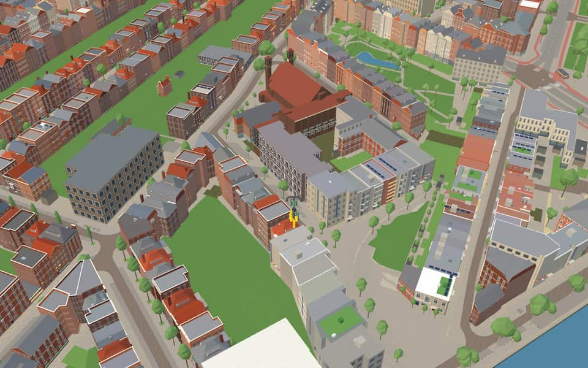
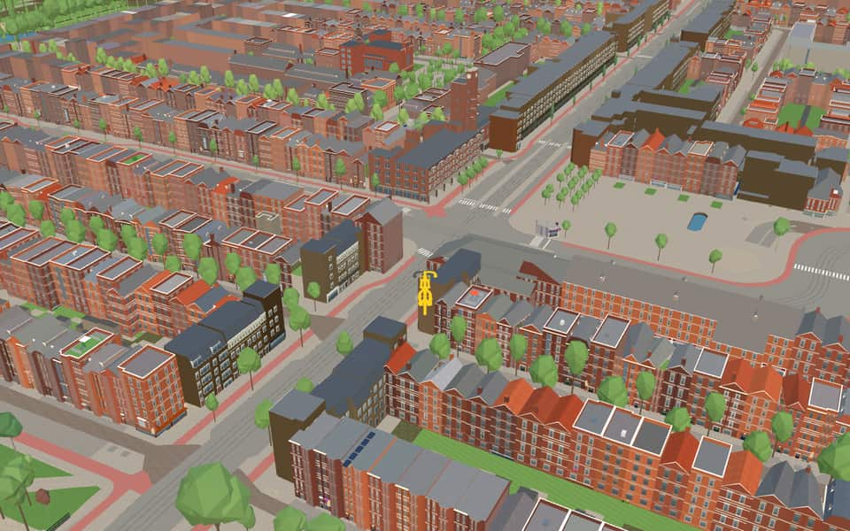

Quarter · Amsterdam
De Baarsjes
De Baarsjes is a district (Dutch: wijk) in Amsterdam-West situated west of the city center of Amsterdam, Netherlands. Named after a former hamlet, urban development started in the 1920s. It contains the neighbourhoods Admiralenbuurt, Chassébuurt, Postjesbuurt, and Trompbuurt. en.wikipedia.org
The name. The name comes from the former hamlet De Baarsjes (The Little Perches) that was formed in the 17th century, which in turn derived its name from an inn called De Drie Baarsjes (The Three Little Perches) situated on the eastern border of the present-day district. en.wikipedia.org


In the game
Frames from a ride through De Baarsjes.




6 more photos of De Baarsjes


.jpg){kind=link}

.jpg){kind=link}


Built here
Buildings modelled one by one for the ride.
Jeruzalemkerk
Chassékerk
Mercatorplein north tower
- No picture yet
Mercatorplein south tower
- No picture yet
MidWest

- No picture yet
Jan Evertsenstraat 142 to 94 (25 houses)
- No picture yet
Jan Evertsenstraat 89-91 to 133-135 (19 houses)
- No picture yet
Jan Evertsenstraat 59 to 89 (15 houses)
- No picture yet
Jan Evertsenstraat 92 to 68 (10 houses)
- No picture yet
Jan Evertsenstraat 43 to 57 (8 houses)
- No picture yet
Jan Evertsenstraat 145 to 155 (6 houses)
- No picture yet
Jan Evertsenstraat 160 to 152 (5 houses)
- No picture yet
Jan Evertsenstraat 139 to 143 (3 houses)
- No picture yet
Jan Evertsenstraat 150 to 146 (3 houses)
- No picture yet
Balboaplein 48, Amsterdam-West (Bos en Lommer)
2004 perimeter housing block of red brick with deep balcony loggias on the south, ribbon-window north front and slate-grey clad upper storeys on the east, around courtyards
.jpg){kind=link}
Drawn from the building kit
234 buildings here use one of the game's reusable post-war building designs, fitted to their real footprint.
- Per 6.2 m pand a canted white bay over storeys 1-3 above a wide ground window, and a pair of varnished entrance doors with transom lights under a window column; mirrored so bays and door pairs meet in pairs 218
- The five-storey version of the we-pk-bay portiek block, canted white bays over storeys 1-4 16
Did you know
Trivia the ride can show you here.
- A district developed from the 1920s around tram routes to the centre. Wikipedia
- Berlage designed its central square, Mercatorplein. Wikipedia
- JeruzalemkerkThe name Jeruzalemkerk honors Jerusalem, a city without a temple since the year 70. nl.wikipedia.org
- JeruzalemkerkPlanners originally intended to call it Nieuwe Westerkerk before choosing its final name. nl.wikipedia.org
- JeruzalemkerkUnlike most churches, this building runs north-south rather than the traditional east-west orientation. nl.wikipedia.org
- JeruzalemkerkArchitect Jantzen deliberately attached the structure directly to existing houses to symbolize God living with people. nl.wikipedia.org
- WestermoskeeFrench architects Marc and Nada Breitman designed the structure. en.wikipedia.org
- WestermoskeeConstruction began in 2013 and finished two years later in 2015. en.wikipedia.org
- WestermoskeeThe mosque held its unofficial opening ceremony on April 1, 2016. en.wikipedia.org
- WesterwijkThe Reformed Petrus Church in Sloterdijk commissioned this project as their client. nl.wikipedia.org
- De KrommertA tram bridge over the ditch, numbered 249, was constructed in 1904. nl.wikipedia.org
- De KrommertTwo road segments meet at nearly a right angle to guide trams toward Sloterdijk. nl.wikipedia.org
- De KrommertThe nearby Krommertstraat honors a ditch that was dammed in 1931. nl.wikipedia.org
- GroentepraambrugPiet Kramer designed this narrow Amsterdam School bridge using brick, natural stone, and wrought iron balustrades. nl.wikipedia.org
17 more facts
- Jan van GalenbrugPiet Kramer originally designed a fixed bridge before converting it into the current bascule structure in 1936. nl.wikipedia.org
- Jan van GalenbrugCity sculptor Hildo Krop created most of the bridge's sculptures, including sea lions and a figure of Jonas in a whale. nl.wikipedia.org
- KinkerbrugRoad traffic was originally blocked by heavy iron doors that were removed around 1970 when barricades appeared. nl.wikipedia.org
- AdmiralengrachtAdmiralengracht honors Dutch and Zeelandish admirals from the 16th to 19th centuries. nl.wikipedia.org
- AdmiralengrachtThree bridges crossing this canal were built in the distinctive Amsterdam School style. nl.wikipedia.org
- KostverlorenvaartThe name Kostverlorenvaart (Lost Cost) arose because the sluice gates became unusable, wasting money. nl.wikipedia.org
- KostverlorenvaartAmsterdam fiercely opposed a 1413 plan to dig locks that might let enemies flood the city. nl.wikipedia.org
- KostverlorenvaartA turnaround path called an overtoom was laid on a dam in 1515 to allow small ships to pass. nl.wikipedia.org
- PostjesweteringIn 1954, the canal was raised from polder level to city center height after connecting to the Kostverlorenvaart. nl.wikipedia.org
- PostjesweteringAmsterdam's thousandth bridge, installed in 1973, spans this waterway near Rembrandtpark. nl.wikipedia.org
- Westelijk MarktkanaalThe canal opened in 1934 specifically to supply the Central Market Halls. nl.wikipedia.org
- Westelijk MarktkanaalUnlike the Lost Fleet, this waterway is not a continuous route. nl.wikipedia.org
- Westelijk MarktkanaalA bascule bridge named Jan van Galen Bridge crosses the canal here. nl.wikipedia.org
- Jan van GalenstraatA viaduct with ramps opened for northbound traffic in 1969 and southbound traffic in 1972. nl.wikipedia.org
- Jan van GalenstraatTram line 13 has been running through this street since 1989 between Jan Tooropstraat and the subway station. nl.wikipedia.org
- Van KinsbergenstraatVandals threw bricks and bicycles at houses here in August 2003 following riots on Mercatorplein. nl.wikipedia.org
- Van KinsbergenstraatAt the Van Speijkstraat intersection, pavement art displays symbols for neighborhood agreements like talking quietly. nl.wikipedia.org
Names on the map
Where the canal, bridge and street names come from.
Canals and water
- AdmiralengrachtA collective name for the admirals from Holland and Zeeland after whom the streets in the surrounding neighbourhood are named.
- KostverlorenvaartAfter the Kostverlorenwetering, dug in 1413 to give a shorter waterway to the Haarlem and Leiden lakes. According to some, the name Kostverloren (cost lost) comes from the heavy legal costs of this channel, which was a bone of contention between Amsterdam and Haarlem until 1609. The name Kostverloren occurs in several places in the Netherlands.
- PostjesweteringAfter the former Postjeswetering. A postje is a small freshwater fish.
- Westelijk MarktkanaalBrought into use in 1934 for carrying goods to and from the Central Market Halls.
Bridges
- GroentepraambrugThe name of this bridge recalls the time when many vegetable barges sailed from the west via the Admiralengrachten and the Kostverlorenkade to the Marnixstraat, where the vegetables were traded. Pramen are low little boats that can easily pass through polder ditches and under footbridges.Bridge 129: a steel bridge for pedestrians, dated 1927 in the city's bridge register.
- Jan van GalenbrugBridge 382: a movable steel bridge.
- KinkerbrugThis bascule bridge is named after Johannes Kinker (1764-1845), poet and lawyer in Amsterdam and The Hague, who later became a professor at Liège.Bridge 266: a movable steel bridge.
Streets
- Admiraal De RuijterwegMichiel Adriaansz. de Ruyter (1607-1676), the renowned admiral of Holland and West Friesland. He was born in Vlissingen. In Amsterdam he lived on what is now the Prins Hendrikkade.
- AdmiralengrachtA collective name for the admirals from Holland and Zeeland after whom the streets in the surrounding neighbourhood are named.
- Adriaan van BergenstraatThe Brabant peat skipper who in 1590 smuggled soldiers of the Dutch Republic (geuzen) into Breda in his peat boat.
- AntillenstraatGroup of islands in the Caribbean Sea, in particular the six islands that together form the Netherlands Antilles.
- ArubastraatPart of the Netherlands Antilles until 1 January 1986. Since then an autonomous country within the Kingdom of the Netherlands (status aparte, 'separate status').
- BaarsjeswegThe former inn 'De Drie Baarsjes' (The Three Little Perches), which at the time stood on the Kostverlorenvaart.
- BaffinstraatWilliam Baffin (1584-1622) was an English navigator. In 1616, while searching for the Northwest Passage, he discovered Baffin Bay and Baffin Island, both named after him.
- BalboapleinVasco Nuñez de Balboa (1475-1517) was a Spanish explorer. In 1513 he discovered the Pacific Ocean, then called the South Sea.
- BalboastraatVasco Nuñez de Balboa (1475-1517) was a Spanish explorer. In 1513 he discovered the Pacific Ocean, then called the South Sea.
- Bartholomeus DiazstraatPortuguese explorer (1450-1500). In 1488 he became the first European to sail around the Cape of Good Hope.
- BestevâerstraatAn honorary name given by sailors to Maarten Harpertsz. Tromp, and later to Michiel Adriaansz. de Ruyter. It literally means 'best father'. The street was originally named Wilhelminastraat by the municipality of Sloten (Sloten council decision of 28 June 1911).
- BonairepleinAn island belonging to the Netherlands Antilles.
69 more streets with a story
- BonairestraatAn island belonging to the Netherlands Antilles.
- CabotstraatThe father Giovanni Cabot (1425-1498) and his son Sebastiano Cabot (1472-1557), Italian explorers. Giovanni discovered Labrador, among other places; Sebastiano explored the east coast of South America and discovered Newfoundland.
- CabralstraatPedro Alvarez Cabral (1460-1520), Portuguese navigator who discovered Brazil in 1500 on his voyage to India.
- ChasséstraatDavid Henderikus Chassé (1765-1849), officer. A general at the Battle of Waterloo in 1815, he defended the Citadel of Antwerp in 1832. When it was laid out, the street was named Van Rijnstraat (council decision of Sloten, 20 July 1910).
- ColumbuspleinChristopher Columbus (1446-1506), seafarer from Genoa. Trying to reach China by sailing west, he discovered the Antilles in 1492, and Central and South America on three later voyages.
- ColumbusstraatChristopher Columbus (1446-1506), seafarer from Genoa. Trying to reach China by sailing west, he discovered the Antilles in 1492, and Central and South America on three later voyages.
- CorantijnstraatA river in Suriname, on the border with Guyana.
- Cornelis DirkszstraatBurgomaster of Monnickendam, later admiral of Noord-Holland (1542-1583). One of the leaders of the Sea Beggars (watergeuzen), he defeated the Spanish on the Zuiderzee in 1573.
- CrynssenstraatAbraham Crijnssen, Zeeland admiral. He conquered Suriname in 1667 and fought in the Battle of the Downs and against the Algerians. He died in 1669.
- CuraçaostraatAn island belonging to the Netherlands Antilles.
- DavisstraatJohn Davis (1550-1605), English navigator. In 1585 he discovered the east coast of Greenland and the Davis Strait, named after him.
- Filips van AlmondestraatNaval hero (1646-1711), admiral in the Nine Years' War against France of 1688 to 1697.
- GeuzenkadeAt first meant as a term of abuse (geuzen: beggars), but taken as a title of honour by the Confederated Nobles (verbonden edelen) in the fight against Spain. Later the fighting name of all opponents of Spain in the Eighty Years' War. The Korte Geuzenstraat was earlier part of the Geuzenstraat.
- GeuzenstraatAt first meant as a term of abuse (geuzen: beggars), but taken as a title of honour by the Confederated Nobles (verbonden edelen) in the fight against Spain. Later the fighting name of all opponents of Spain in the Eighty Years' War. The Korte Geuzenstraat was earlier part of the Geuzenstraat.
- HoofdwegThe former municipality of Sloten gave the name for its function: a wide central main road (hoofdweg). After the annexation of 1921 the road was extended north to the Bos en Lommerplein.
- HudsonhofHenry Hudson (c. 1565-1611), English navigator, who sailed for the Dutch East India Company in 1609. On his last voyage, in 1610, he discovered the Hudson Bay, named after him, between Labrador and Canada.
- HudsonstraatHenry Hudson (1550-1611), English navigator in the service of the Dutch East India Company. He discovered the Hudson Bay, named after him, between Labrador and Canada (1610).
- Jacob van Wassenaar ObdamstraatJacob Baron van Wassenaer, Lord of Obdam (1610-1665), Dutch lieutenant-admiral, who was blown up with his ship at the Battle of Lowestoft in the Second Anglo-Dutch War.
- James CookstraatEnglish explorer (1728-1779) whose discoveries include the east coast of Australia.
- Jan EvertsenstraatJohan Evertsen (1600-1666), of a Zeeland family of naval heroes. As admiral he took part in several naval battles, including the Battle of the Downs (1639). He was killed in the Second Anglo-Dutch War.
- Jan MaijenstraatThe Dutch navigator Jan Cornelisz May, who in 1611 discovered the Jan Mayen island named after him, between Spitsbergen and Iceland.
- Jan van GalenstraatFleet commander (1604-1653), killed in the Battle of Livorno against the English.
- Jan van RiebeekstraatJan Anthonie van Riebeeck or Riebeek (1618-1708), who in 1652, in the service of the Dutch East India Company, founded the Cape Colony at the Cape of Good Hope.
- John FranklinstraatEnglish naval officer (1786-1847) who explored the Northwest Passage, but whose expedition perished in the polar ice.
- Joos de MoorstraatVice-admiral of Zeeland (1548-1618), known from the Eighty Years' War, who fought the Dunkirk privateers.
- Korte GeuzenstraatAt first meant as a term of abuse (geuzen: beggars), but taken as a title of honour by the Confederated Nobles (verbonden edelen) in the fight against Spain. Later the fighting name of all opponents of Spain in the Eighty Years' War. The Korte Geuzenstraat was earlier part of the Geuzenstraat.
- KortenaerstraatEgbert M. Kortenaer, lieutenant-admiral, who took part in the naval battles of Ter Heijde (1653) and the Sound (1658). He was killed in 1665 in the Battle of Lowestoft against the English.
- KrommertstraatThe winding little canal the Krommert, already partly filled in before 1930. The rest was filled in in the 1950s.
- Lodewijk BoisotstraatAdmiral of Zeeland (1530-1576) under William of Orange, who in 1574 relieved Leiden from the Spanish siege. He drowned trying to relieve Zierikzee.
- LumeijstraatWillem van Lumey (1542-1576), leader of the Sea Beggars before Den Briel in 1572. William of Orange then appointed him his lieutenant and governor of Holland, but he was finally dismissed for his cruelties. The municipality of Sloten named the street Emmastraat (council decision of Sloten, 28 June 1911), but this and other names were changed after the annexation of 1921 because they already existed elsewhere in Amsterdam.
- Maarten Harpertszoon TrompstraatDutch admiral (1597-1653), who defeated the Spanish fleet at the Downs in 1639. He was killed fighting the English in the naval battle of Ter Heijde.
- MagalhaenspleinFernão de Magalhães or Magellan (1480-1521), Portuguese navigator, who in 1520 discovered the strait between South America and Tierra del Fuego named after him, and from there was the first to cross the Pacific Ocean, to the Philippines.
- MagalhaensstraatFernão de Magalhães or Magellan (1480-1521), Portuguese navigator, who in 1520 discovered the strait between South America and Tierra del Fuego named after him, and from there was the first to cross the Pacific Ocean, to the Philippines.
- Marco PolostraatVenetian traveller (1254-1323), who spent a quarter of a century among the Chinese and is known for his travel accounts.
- MarowijnestraatA river in Suriname, on the border with French Guiana.
- MercatorpleinFlemish geographer and cartographer whose real name was Gerard Kremer (1512-1594), who drew the first world map in cylindrical projection.
- MercatorstraatFlemish geographer and cartographer whose real name was Gerard Kremer (1512-1594), who drew the first world map in cylindrical projection.
- NepveustraatJan Nepveu (1719-1779), governor of Suriname.
- NickeriestraatA river in Suriname.
- OrteliuskadeAbraham Ortelius (1527-1598), Flemish geographer, maker of a famous atlas.
- OrteliusstraatAbraham Ortelius (1527-1598), Flemish geographer, maker of a famous atlas.
- ParamaribopleinThe capital of Suriname.
- ParamaribostraatThe capital of Suriname.
- Pieter van der DoesstraatCommander of the Holland fleet in the struggle against the Spanish (1562-1599).
- Piri ReispleinHadji Muhiddin Piri Ibn Hadji Mehmed, better known as Piri Reis ('Captain Piri'), Ottoman seafarer, navigator and cartographer of the fifteenth and sixteenth centuries, maker of the Piri Reis map, a detailed world map that appeared in 1513.
- PostjeskadeAfter the former Postjeswetering. A postje is a small freshwater fish.
- PostjeswegAfter the former Postjeswetering. A postje is a small freshwater fish.
- Reinier ClaeszenpleinDutch vice-admiral, who in 1606 was attacked by the Spanish fleet off Cape St Vincent (Portugal) and blew up his ship rather than surrender.
- Reinier ClaeszenstraatDutch vice-admiral, who in 1606 was attacked by the Spanish fleet off Cape St Vincent (Portugal) and blew up his ship rather than surrender.
- ShackletonstraatSir Ernest Henry Shackleton (1874-1922), Irish-born British Antarctic explorer, whose Nimrod expedition sent the first party to reach the South Magnetic Pole, in 1909.
- SlatuinenwegThis is what remains of the former Slatuinenpad, which until 1927 ran from the Baarsjesweg to the Haarlemmerweg past market gardens (slatuinen, where lettuce and vegetables were grown). It was a favourite walk for Amsterdammers.
- StuyvesantstraatPeter Stuyvesant (1611/12-1672), colonial administrator and governor of Curaçao, the last director of the colony of New Netherland, which had to be ceded to the English at the Peace of Breda (1667). He promoted trade with America and the West Indies.
- SurinamepleinNamed after Suriname.
- TorresstraatLuis Vaez de Torres (flourished 1606), Spanish navigator, who in 1606 sailed through the strait named after him, the Torres Strait between Australia and New Guinea.
- Van BrakelstraatJan van Brakel (1618-1690), naval officer under Admiral De Ruyter (the Four Days' Battle, the raid on Chatham).
- Van KinsbergenstraatJan Hendrik van Kinsbergen (1735-1819), admiral at the Battle of the Dogger Bank in 1781, who reorganised the navy.
- Van MiddellandtstraatPieter van Middellandt, rear admiral, who fought under Admiral De Ruyter off Etna in 1676 and was killed that same year in the Battle of Palermo.
- Van RensselaerstraatKiliaen van Rensselaer (c. 1586-1643), jeweller and member of the Amsterdam chamber of the West India Company, who founded the colony of Rensselaerswijck near New Amsterdam (New York).
- Van SpeijkstraatJan Carel Josephus van Speijk (1802-1831), an Amsterdam orphan boy who became a naval officer. During the Belgian revolt in 1831 he blew up his ship near Antwerp rather than surrender.
- Van SpilbergenstraatJoris van Spilbergen (1568-1620), navigator, who sailed round the world from 1614 to 1617.
- Van WalbeeckstraatJohannes van Walbeeck (1601-1649), sea captain of the West India Company, who led the expedition that conquered Curaçao (1634).
- VancouverstraatGeorge Vancouver (1757-1798), English navigator, the first to sail round the island named after him, Vancouver Island (off the west coast of Canada).
- Vasco da GamastraatPortuguese explorer (1469-1524), who in 1497-1498 opened the sea route to India round the Cape of Good Hope.
- VespuccistraatAmerigo Vespucci (1454-1512), Florentine explorer, who sailed along and described the coasts of America. That is probably why America is named after him and not after Columbus.
- WiegbrugThis bascule bridge is named after the type of bridge it originally was: a wiegbrug (cradle bridge) is a rolling bascule bridge.
- Willem de ZwijgerlaanThe nickname (William the Silent) of Prince William of Orange (1533-1584), also called 'the Father of the Fatherland', son of William of Nassau and Juliana of Stolberg. Because he inherited the principality of Orange, he is the founder of the House of Orange-Nassau.
- Willem SchoutenstraatNavigator (c. 1567-1625), who sailed round the world and discovered the islands near New Guinea later named after him.
- Witte de WithpleinWitte Cornelisz de With (1599-1658), vice-admiral of Holland and West Friesland, who fought under Tromp at the Downs and at Terheide, among other battles, and was killed in the Battle of the Sound against the Swedes.
- Witte de WithstraatWitte Cornelisz de With (1599-1658), vice-admiral of Holland and West Friesland, who fought under Tromp at the Downs and at Terheide, among other battles, and was killed in the Battle of the Sound against the Swedes.
2 other streets without a recorded story
Jan Maijenplein · Kees Fensplein